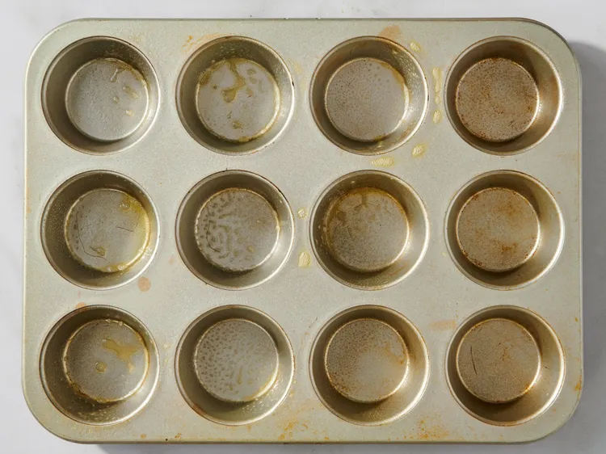
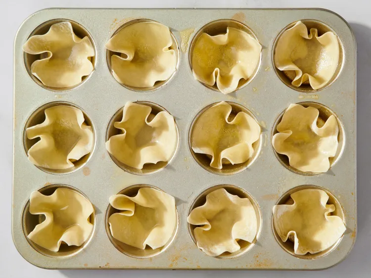
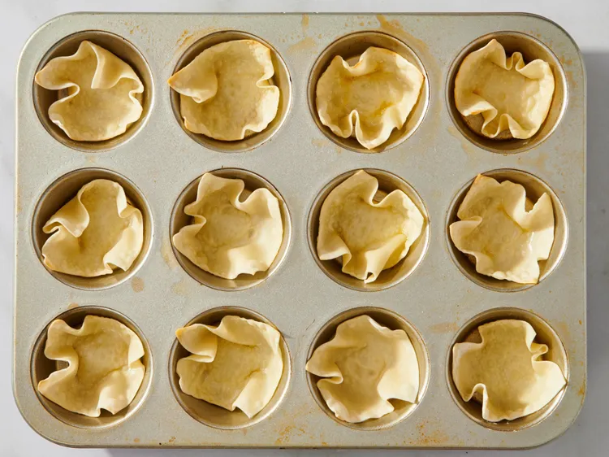
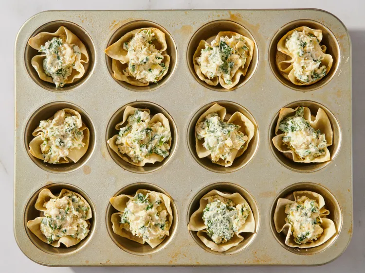
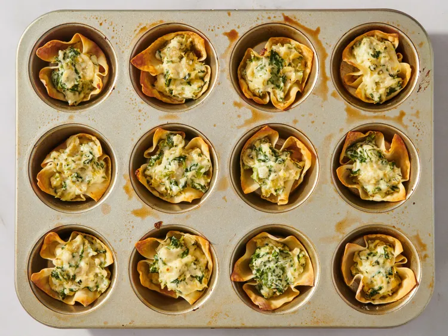

Home
Artichoke Dip Wonton Cups

These artichoke dip wonton cups are a fun twist on the traditional spinach artichoke
dip with tortilla chips. Served as individual bites, they're ideal for a party.
Ingredients
- cooking spray
- 12 wonton wrappers
- 5 ounces frozen spinach, thawed and squeezed dry
- 1 small jar artichoke hearts, drained and finely chopped
- 1/3 cup mayonnaise
- 1/4 cup sour cream
- 2 ounces cream cheese, at room temperature
- 1/2 cup grated Parmesan cheese
- 2 cloves garlic, smashed into a paste
Steps
- Preheat the oven to 350 degrees F (180 degrees C). Spray a standard 12-cup muffin tin with cooking spray.

- Line each muffin cup with a wonton wrapper. Press the center of the wrapper down into the cup, leaving the edges sticking up out of the cup. Spray each wrapper lightly with cooking spray.

- Bake cups in the preheated oven for 5 minutes, then remove from the oven.

- Add spinach, artichoke hearts, mayonnaise, sour cream, cream cheese, Parmesan cheese, and garlic in a bowl until well incorporated. Divide mixture evenly between wonton cups.

- Return to the oven and bake until filling is heated through and edges of wrappers are golden brown, about 15 minutes.
